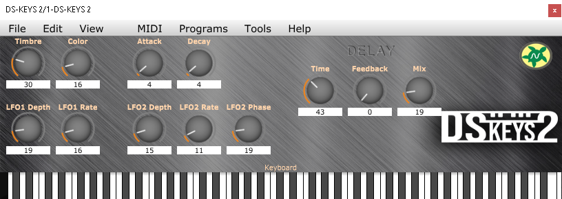
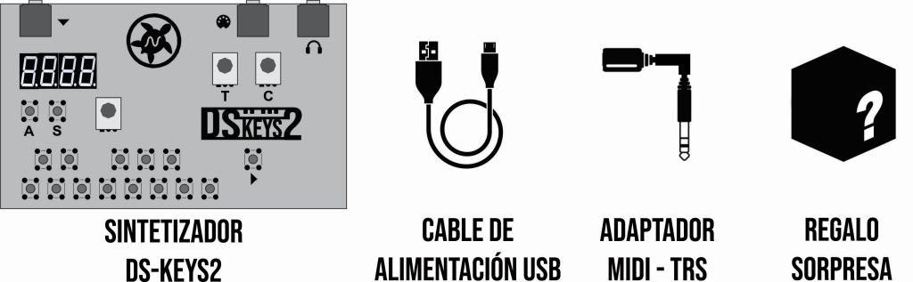
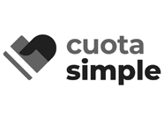
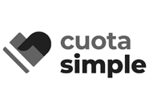

Sintetizador monofónico DS-Keys2
Este sintetizador monofónico digital compacto le brindará muchas maneras de crear música, melodías, texturas y sonidos. Cuenta con una gran variedad de osciladores digitales los cuales poseen dos parámetros configurables:“Color” y “Timbre”, junto con un Envelope Generator y dos LFO, los cuales tienen la capacidad de modular dichos parámetros. Además cuenta con un poderoso Arpeggiator y un Sequencer que le dejará pre-grabar melodías y reproducirlas.
Demos
A continuación te dejamos algunos samples grabados con DS-Keys2.
Downloads
Firmware v1.5 DownloadFirmware v1.4 Download
Tutorial actualización de firmware aquí
VST
Controlá el equipo por MIDI usando un VST
Download VST (Windows)
- 45 sonidos diferentes.
- Resolución: 8bit @ 96Khz.
- Envolope generator.
- 2 LFOs con 5 formas de onda diferentes.
- Efecto de Delay/Reverb.
- Entrada de sincronismo.
- Entrada MIDI.
- Entrada MIDI USB.
- Salida de auriculares y/o línea STEREO.
- Teclado mecánico de una octava.
- Sequencer con 8 patrones encadenables de hasta 16 notas pre-grabadas.
- Arpeggiator con 13 modos y 8 escalas diferentes.
Diagrama en bloques
En el diagrama en bloques pueden verse todas las características del equipo y cómo sus diferentes sistemas se modulan y afectan entre sí.
Un universo de nuevos sonidos a tu alcance
El engine de sonidos de DS-Keys2 está basado en el módulo macro-oscilador "Braids" de Mutable Instruments, y mediante los controles de Color y Timbre, que modifican parámetros de la forma de onda seleccionada, DS-Keys2 se transforma en un equipo flexible y poderoso.
Tutoriales
Conectividad
DS-Keys2 posee una entrada micro USB que además de servir para alimentar el equipo, puede utilizarse para enviar MIDI por USB desde una PC.
Su entrada MIDI permite utilizando un adaptador MIDI-TRS tipo "A", conectar un controlador MIDI y de esta forma expandir el teclado a más octavas y modificar los parámetros de modulación.
La entrada de sincronismo te permitirá conectar este equipo a una máquina de ritmos como los Pocket Operators.
Arpegiador
El equipo cuenta con un arpegiador de hasta 24 notas, posee 8 escalas diferentes y 13 patrones de comportamiento diferentes, los cuales incluyen generación de notas aleatorias e introducción de probabilidades de ocurrencia.
Sequencer
DS-Keys2 cuenta con un sequencer de 8 patrones de 16 notas máximo cada uno, estos patrones pueden
encadenarse para reproducirse en el orden deseado.
Es posible armar una cadena de hasta 32 patrones.
Puede configurarse por cada nota una cierta cantidad de repeticiones,
o un porcentaje de chance de que la nota suene o se incluya un silencio en su lugar.
Qué incluye el producto
Conseguí el tuyo
Hacemos factura C. Envíos a todo el país. 

Aboná por Mercadopago y te lo enviamos por Correo Argentino a todo el país.
6 cuotas de $26.472
3 cuotas de $49.544
o un pago de $136.605
Envío incluídoContactanos, decinos a dónde se realiza el envío y te pasamos un link de pago:

@tortoiseinstruments
ventas@tortoiseinstruments.com.ar